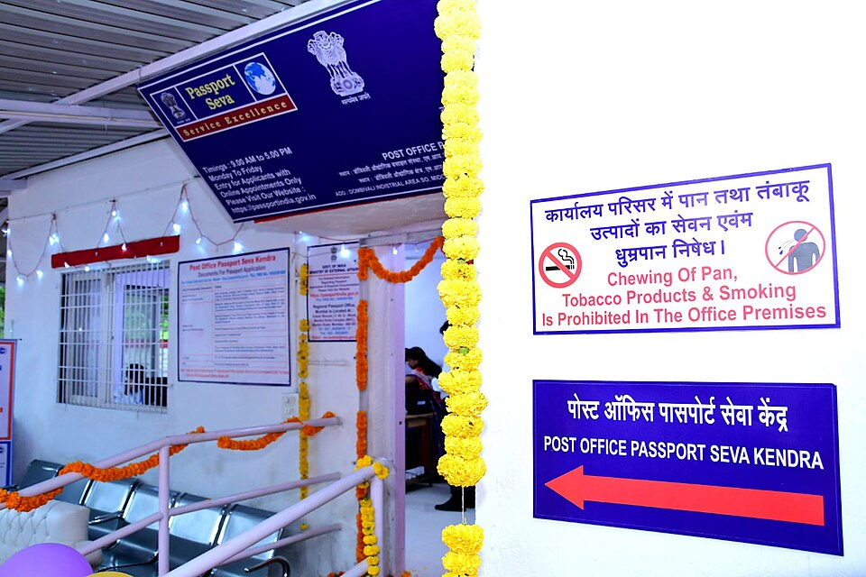
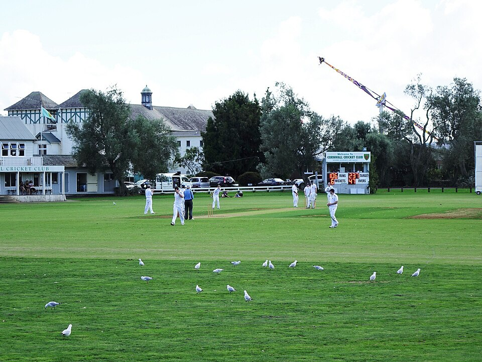

राष्ट्रीय
राष्ट्रीयसंसद सत्र से पहले परिसीमन विधेयक पर विचार, सभी राज्यों में 50% सीटें बढ़ाने का प्रस्ताव
संसद के आगामी सत्र से पहले सरकार सभी राज्यों में लोकसभा सीटें 50% बढ़ाने वाले परिसीमन विधेयक पर विचार कर रही है। इसे पारित कराने के लिए संख्या बल जुटाने की कवायद शुरू हो गई है।
ताज़ा ख़बरें
 टेक
टेकएनवीडिया की सफलता में 20 साल पुरानी CUDA टेक्नोलॉजी की अहम भूमिका
एनवीडिया की वैश्विक सफलता के पीछे केवल आधुनिक एआई चिपसेट नहीं, बल्कि करीब दो दशक पुरानी 'CUDA' सॉफ्टवेयर टेक्नोलॉजी है, जिसने कंपनी को इस क्षेत्र में बढ़त दिलाई है।
राष्ट्रीयसंसद के विशेष सत्र में परिसीमन और महिला आरक्षण बिल पर चर्चा संभव
केंद्र सरकार ने संसद के आगामी सत्र में परिसीमन और महिला आरक्षण से जुड़े विधेयकों को दोबारा लाने की तैयारी की है। बिल पास होने पर लोकसभा सीटों की संख्या बढ़ने और महिलाओं को 33 प्रतिशत आरक्षण मिलने का रास्ता साफ होगा।
राष्ट्रीयडिमिटेशन बिल पर डीएमके के रुख में नरमी, संशोधनों के बाद समर्थन पर कर सकती है विचार
डीएमके ने संकेत दिया है कि यदि नए डिमिटेशन बिल में पार्टी की चिंताओं का समाधान किया जाता है, तो वह इस पर विचार कर सकती है। प्रवक्ता टीसीएस इलनगोवन ने कहा कि संशोधित मसौदे की समीक्षा के बाद अंतिम निर्णय लिया जाएगा।
राष्ट्रीयनीम करोली बाबा पर बनी फिल्म 'हनुमान अंश' ओटीटी पर हुई रिलीज
महज ₹2 करोड़ के बजट में बनी फिल्म 'हनुमान अंश' ने बॉक्स ऑफिस पर ₹450 करोड़ से अधिक की कमाई कर नया रिकॉर्ड बनाया है।
 टेक
टेकसाइबर हमला: यूरोपीय टेक कंपनी एसएपी के सिस्टम में सेंध, हैकर्स ने चुराए टोकन
यूरोप की प्रमुख टेक कंपनी एसएपी पर साइबर हमला हुआ है। हैकर्स ने ऑथेंटिकेशन टोकन चुराने के साथ सोर्स कोड तक पहुंच बनाई है, हालांकि ग्राहकों का डेटा सुरक्षित होने का दावा किया गया है।
 अंतरराष्ट्रीय
अंतरराष्ट्रीयअमेरिका में ट्रंप और नाटो प्रमुख की बैठक, रूस से युद्ध न बढ़ाने की अपील
अमेरिका के फ्लोरिडा में डोनाल्ड ट्रंप और नाटो महासचिव मार्क रुटे ने बैठक की। दोनों नेताओं ने रूस से यूक्रेन संघर्ष को और न बढ़ाने की अपील की है।
राष्ट्रीयपरिसीमन विधेयक पर कार्ति चिदंबरम के संकेत, बदल सकता है डीएमके और एनसीपी-एसपी का रुख
कांग्रेस सांसद कार्ति चिदंबरम ने परिसीमन विधेयक को लेकर डीएमके और एनसीपी-एसपी के रुख में संभावित बदलाव के संकेत दिए हैं। उन्होंने सोशल मीडिया पर पोस्ट कर यह बात कही।
 अंतरराष्ट्रीय
अंतरराष्ट्रीयब्राज़ील के अमेज़न जंगलों में अलग-थलग रहने वाले आवा आदिवासी क्यों आए सामने?
ब्राज़ील के अमेज़न जंगलों में बाहरी दुनिया से अलग रहने वाले आवा आदिवासी समुदाय के लोग सुरक्षा शिविर में पहुंचे हैं। जंगलों में लगातार बढ़ रही घुसपैठ और खनन गतिविधियों के कारण इन्हें अपनी जगह छोड़ने पर मजबूर होना पड़ा है।
राष्ट्रीयसंसद के विशेष सत्र से पहले कांग्रेस ने जारी किया व्हिप, सभी सांसदों को दिल्ली रहने का निर्देश
संसद के आगामी विशेष सत्र को लेकर कांग्रेस ने अपने सभी लोकसभा और राज्यसभा सांसदों को 29 नवंबर तक दिल्ली में मौजूद रहने का निर्देश दिया है। पार्टी ने सरकार की मंशा पर सवाल उठाए हैं।
 राष्ट्रीय
राष्ट्रीयउत्तराखंड के हरिद्वार में साल 2027 में होगा अर्धकुंभ का आयोजन
उत्तराखंड के हरिद्वार में वर्ष 2027 के अर्धकुंभ मेले की तैयारियां शुरू हो गई हैं। यह आयोजन 14 जनवरी से 20 अप्रैल तक प्रस्तावित है, जिसमें चार अमृत स्नान समेत कई प्रमुख स्नान पर्व होंगे।
राष्ट्रीयपरिसीमन बिल पर डीएमके दे सकती है मोदी सरकार का समर्थन, कांग्रेस सांसद ने किया दावा
कांग्रेस सांसद मनोज कुमार ने दावा किया है कि डीएमके परिसीमन बिल पर कुछ शर्तों के साथ केंद्र सरकार का समर्थन कर सकती है। इस मामले में अंतिम फैसला 30 नवंबर तक लिया जाएगा।
राष्ट्रीयगुजरात के वडोदरा से जैश-ए-मोहम्मद का संदिग्ध आतंकी गिरफ्तार, हथियार बरामद
गुजरात एटीएस ने वडोदरा से जैश-ए-मोहम्मद से जुड़े एक संदिग्ध आतंकी को गिरफ्तार किया है। आरोपी के पास से एक राइफल और 20 से अधिक जिंदा कारतूस बरामद किए गए हैं, और फिलहाल उससे पूछताछ जारी है।
राष्ट्रीयYSRCP ने परिसीमन विधेयक का समर्थन करने के दिए संकेत, रखी एक शर्त
YSRCP ने संसद में परिसीमन विधेयक का समर्थन करने की इच्छा जताई है, बशर्ते क्षेत्रीय संतुलन सुनिश्चित करने के लिए उचित सुरक्षा उपाय किए जाएं।

राष्ट्रीयगुजरात की डॉली वडालिया को 26 साल की उम्र में मिला भारतीय पासपोर्ट
मोज़ाम्बिक में जन्मीं और 25 दिन की उम्र से भारत में रह रहीं डॉली वडालिया को कानूनी अड़चनों के बाद आखिरकार भारतीय नागरिकता और पासपोर्ट मिल गया है।
 राष्ट्रीय
राष्ट्रीयसुप्रीम कोर्ट ने सीबीएसई छात्रों को दी राहत, मौजूदा भाषा विकल्प जारी रखने की अनुमति
सुप्रीम कोर्ट ने स्पष्ट किया है कि सीबीएसई स्कूलों के छात्र अपनी मौजूदा दो या तीन भाषाओं की पसंद को जारी रख सकते हैं। कोर्ट ने कहा कि नई नीति के तहत छात्रों पर भाषा बदलने का दबाव नहीं डाला जा सकता।
 व्यापार
व्यापारMCX पर सोने और चांदी की कीमतों में तेजी, जानिए आज के ताजा भाव
घरेलू वायदा बाजार में शुक्रवार को सोने और चांदी की कीमतों में तेजी दर्ज की गई। एमसीएक्स पर चांदी 5,900 रुपये से अधिक मजबूत हुई, जबकि सोने के भाव में भी इजाफा देखा गया।
 खेल
खेलभारत-न्यूजीलैंड दूसरा टेस्ट: जडेजा और सिराज को बाहर रखने पर गावस्कर ने उठाए सवाल
क्राइस्टचर्च में खेले जा रहे दूसरे टेस्ट मैच में रवींद्र जडेजा और मोहम्मद सिराज को प्लेइंग-11 में जगह नहीं मिलने पर पूर्व क्रिकेटर सुनील गावस्कर ने चयन पर सवाल खड़े किए हैं।
अंतरराष्ट्रीयपाकिस्तान यात्रा पर गए पंजाब के तीन सिख तीर्थयात्री लापता
गुरु नानक देव की जयंती पर पाकिस्तान गए पंजाब के तीन सिख तीर्थयात्री लापता हो गए हैं। दिल्ली सिख गुरुद्वारा प्रबंधक कमेटी ने पाकिस्तानी अधिकारियों से मामले की जांच की मांग की है।
खेलवर्ल्ड चेस चैंपियनशिप: डी गुकेश और जावोखिर सिंदारोव का तीसरा मुकाबला भी ड्रॉ
जिनेवा में चल रही वर्ल्ड चेस चैंपियनशिप के तीसरे गेम में भारतीय ग्रैंडमास्टर डी गुकेश और उज्बेकिस्तान के जावोखिर सिंदारोव के बीच मुकाबला 60 चालों के बाद ड्रॉ पर छूटा।
राष्ट्रीयअमिताभ बच्चन के आवास 'जलसा' और दिलजीत दोसांझ के कॉन्सर्ट को बम से उड़ाने की धमकी
बॉलीवुड अभिनेता अमिताभ बच्चन के बंगले 'जलसा' और गायक दिलजीत दोसांझ के मुंबई कॉन्सर्ट को ईमेल के जरिए बम से उड़ाने की धमकी मिली है, जिसके बाद सुरक्षा बढ़ा दी गई है।

खेलमोहम्मद सिराज को न्यूज़ीलैंड के ख़िलाफ़ दूसरे टेस्ट में भी प्लेइंग इलेवन में जगह नहीं
न्यूज़ीलैंड के ख़िलाफ़ दूसरे टेस्ट में भी तेज़ गेंदबाज़ मोहम्मद सिराज को भारत की प्लेइंग इलेवन में शामिल नहीं किया गया है. लगातार बाहर रखने के इस फ़ैसले पर पूर्व क्रिकेटरों और विशेषज्ञों ने सवाल उठाए हैं.
राष्ट्रीयसंसद के विशेष सत्र से पहले आज केंद्रीय कैबिनेट की बैठक, महिला आरक्षण और परिसीमन पर चर्चा संभव
प्रधानमंत्री नरेंद्र मोदी की अध्यक्षता में आज केंद्रीय कैबिनेट की बैठक होगी। 30 नवंबर से शुरू होने वाले संसद के विशेष सत्र में महिला आरक्षण और परिसीमन से जुड़े विधेयक पेश किए जा सकते हैं।
राष्ट्रीयउत्तर प्रदेश चुनाव: चंद्रशेखर और ओवैसी के 'सामाजिक परिवर्तन मोर्चा' की पहली साझा रैली
संविधान दिवस के मौके पर लखनऊ में चंद्रशेखर आज़ाद और असदुद्दीन ओवैसी ने 'सामाजिक परिवर्तन मोर्चा' के तहत पहली साझा रैली की। इस दौरान दोनों नेताओं ने भाजपा और सपा पर निशाना साधा।
 अंतरराष्ट्रीय
अंतरराष्ट्रीयअमेरिका में भीषण तूफान और बारिश से जनजीवन प्रभावित, 10 लाख लोग अंधेरे में
अमेरिका के मिडवेस्ट और उत्तर-पूर्वी इलाकों में थैंक्सगिविंग के दौरान आए भीषण तूफान और भारी बारिश से लगभग 10 लाख लोग बिजली से वंचित हो गए हैं और सैकड़ों उड़ानें रद्द करनी पड़ी हैं।
अंतरराष्ट्रीयचीन के रेस्टोरेंट में महिला कर्मचारियों के लिए मेकअप अनिवार्य, सैलरी कटने का नियम
चीन की रेस्टोरेंट चेन 'न्यू न्यू सुकीयाकी' में महिला कर्मचारियों के लिए मेकअप करना अनिवार्य करने का मामला सामने आया है। नियम न मानने पर सैलरी काटने की बात कही जा रही है, जिस पर सोशल मीडिया पर बहस छिड़ गई है।
 राष्ट्रीय
राष्ट्रीयशाहरुख खान की आगामी फिल्म किंग का रनटाइम 3 घंटे 17 मिनट तय
बॉलीवुड अभिनेता शाहरुख खान की आने वाली फिल्म किंग का रनटाइम 3 घंटे 17 मिनट होगा। इसके साथ ही यह उनके करियर की लंबी फिल्मों में शामिल हो जाएगी।
अंतरराष्ट्रीयबांग्लादेशी स्पीकर का दावा, 1971 की जंग में भारत ने पाकिस्तान को कमजोर किया था
पाकिस्तान के दौरे पर गए बांग्लादेश के संसद अध्यक्ष हाफिज उद्दीन अहमद ने 1971 के मुक्ति संग्राम को लेकर विवादित बयान दिया है। उन्होंने आरोप लगाया कि भारत ने बंगालियों की मदद करने के बजाय पाकिस्तान को कमजोर करने का प्रयास किया।
राष्ट्रीयहिमाचल प्रदेश की देव परंपरा पर अंतरराष्ट्रीय शोध, बखाण अनुष्ठान में भविष्यवाणियों का अध्ययन
अंतरराष्ट्रीय शोध पत्रिका में हिमाचल प्रदेश के ऊपरी शिमला क्षेत्र की देव परंपरा और बखाण अनुष्ठान पर अध्ययन प्रकाशित हुआ है। इसमें मौसम, महामारी और कृषि से जुड़ी भविष्यवाणियों का जिक्र है।
राष्ट्रीयJEE Main 2027: जनवरी सत्र के आवेदन में सुधार की सुविधा आज से शुरू
नेशनल टेस्टिंग एजेंसी आज से जेईई मेन 2027 जनवरी सत्र के आवेदन पत्र में सुधार की सुविधा शुरू कर रही है। पंजीकृत उम्मीदवार 29 नवंबर तक आधिकारिक वेबसाइट पर जाकर जरूरी बदलाव कर सकते हैं।
राष्ट्रीयउत्तर भारत में शीतलहर और घने कोहरे का प्रकोप, 13 राज्यों में मौसम विभाग का अलर्ट
देशभर में ठंड बढ़ने के साथ ही राजस्थान में शीतलहर और उत्तर भारत के 13 राज्यों में घने कोहरे का अलर्ट जारी किया गया है। वहीं, दक्षिण भारत के कुछ हिस्सों में बारिश की संभावना है।
अंतरराष्ट्रीयसऊदी अरब ने यमन में हूती ठिकानों पर की बमबारी, तेल रिफाइनरी हमले में नेपाली नागरिक की मौत
यमन में सऊदी अरब के फाइटर जेट्स ने हूती विद्रोहियों के ठिकानों पर बमबारी की है। वहीं, सऊदी अरब की एक तेल रिफाइनरी पर हुए हमले में नेपाल के एक कर्मचारी की जान चली गई।
 अंतरराष्ट्रीय
अंतरराष्ट्रीयअमेरिका में थैंक्सगिविंग पर तूफान का कहर, 400 से अधिक उड़ानें रद्द
अमेरिका में थैंक्सगिविंग की छुट्टियों के दौरान आए विनाशकारी तूफान से 400 से ज्यादा उड़ानें रद्द हो गईं और आठ लाख से अधिक घरों में बिजली आपूर्ति ठप हो गई।
राष्ट्रीयउत्तर प्रदेश में बीजेपी ने तेज की चुनावी घेराबंदी, सामाजिक समीकरण साधने में जुटे ब्रजेश पाठक
उत्तर प्रदेश विधानसभा चुनाव 2027 से पहले बीजेपी ने सामाजिक समीकरणों को मजबूत करने के लिए संपर्क अभियान तेज कर दिया है। डिप्टी सीएम ब्रजेश पाठक के नेतृत्व में लखनऊ में दो दिवसीय बैठक आयोजित की गई।
राष्ट्रीयसंसद का विशेष सत्र बुलाए जाने पर कांग्रेस ने जताई आपत्ति
केंद्र सरकार द्वारा संसद का विशेष सत्र बुलाए जाने के फैसले पर कांग्रेस ने तीखी प्रतिक्रिया दी है। पार्टी नेताओं ने इसे संविधान और संसद की गरिमा के खिलाफ बताया है।
खेलभारत और न्यूजीलैंड के बीच दूसरा टेस्ट शुरू, टॉस जीतकर गेंदबाजी चुनी
क्राइस्टचर्च के हेगले ओवल मैदान पर खेले जा रहे दूसरे टेस्ट मैच में भारत ने टॉस जीतकर पहले गेंदबाजी का फैसला किया है। तेज गेंदबाज गुरनूर बराड़ इस मैच से अपना टेस्ट डेब्यू कर रहे हैं।
व्यापारताशकंद में आज आयोजित होगा अमर उजाला बिजनेस एक्सीलेंस अवॉर्ड्स
उज्बेकिस्तान की राजधानी ताशकंद में शुक्रवार शाम को अमर उजाला बिजनेस एक्सीलेंस अवॉर्ड्स 2026 का आयोजन किया जाएगा। इसमें देश के विभिन्न शहरों के 23 कारोबारियों और उद्यमियों को सम्मानित किया जाएगा।
राष्ट्रीयअखिलेश यादव ने आजम खान को एयरपोर्ट छोड़ा, यूपी चुनाव से पहले सियासी संकेत
उत्तर प्रदेश विधानसभा चुनाव से पहले समाजवादी पार्टी प्रमुख अखिलेश यादव ने आजम खान को खुद अपनी गाड़ी से एयरपोर्ट पहुंचकर विदा किया, जिसे एक बड़े राजनीतिक संकेत के रूप में देखा जा रहा है।
राष्ट्रीयजाकिर नाइक के संगठन इस्लामिक रिसर्च फाउंडेशन पर कार्रवाई का अधिकार राज्यों को मिला
केंद्र सरकार ने जाकिर नाइक के प्रतिबंधित संगठन इस्लामिक रिसर्च फाउंडेशन के खिलाफ UAPA के तहत फंड और प्रॉपर्टी जब्त करने का अधिकार राज्य सरकारों को दे दिया है।
राष्ट्रीयहैदराबाद में कांग्रेस और BRS कार्यकर्ताओं के बीच झड़प, बिरयानी प्रोटेस्ट के दौरान हंगामा
तेलंगाना के हैदराबाद में कांग्रेस और BRS कार्यकर्ताओं के बीच हिंसक झड़प हो गई। BRS ने सरकारी नौकरियों के वादों को लेकर बिरयानी प्रोटेस्ट रखा था, जिसमें राहुल गांधी का पुतला दहन किया गया। KTR ने इस हमले की कड़ी निंदा की है।